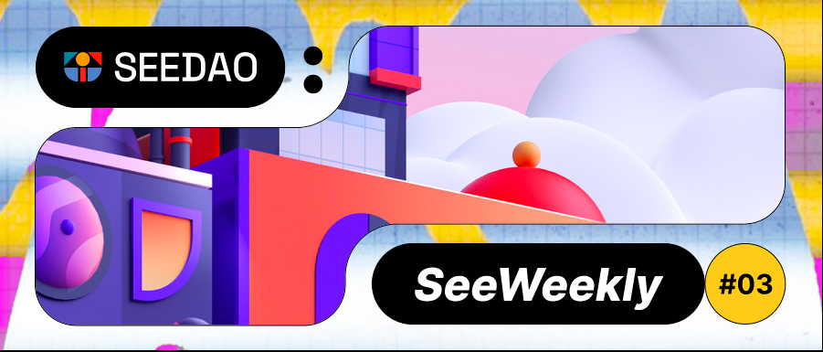

SeeDAO 周报如期而至，本周又是安排满满的一周。
快来看看SeeDAO过去一周活动总结和未来一周的活动规划吧。
SeeDAO本周活动速递
Dec.
05
“稳定币与美元霸权”
Chop!Chop第三期来袭！邀请到了菠菜老师和萨摩老师为大家分享稳定币与美元霸权！
Dec.
11
SeeDAO辩论赛第一期圆满结束
（在DAO治理中，使用匿名评估更好还是实名评估）
在12月11日晚的社区会议上，第一期SeeDAO辩论赛圆满举行。
Dec.
11
Seeshore线上线下活动预告
一、web3投研会：一周新闻简报回顾
时间 | 周一 14：00
地点 | 大理山水间seeshore
线上 | SEEDAOdiscord文山会海频道
二、web3投研会：专题技术讨论
时间 | 周五 10：00
地点 | 大理山水间seeshore
线上 | SEEDAOdiscord文山会海频道
三、DAO irl：Seeshore大理内部治理周会 - 2
Host | FEFE 时间 | 周日 22：00
地点 | 大理山水间seeshore
线上 | SEEDAOdiscord 咖啡广场频道
Dec.
14
SeeDAO 澳洲据点线下聚会
SeeDAO 澳洲据点的第一次线下活动正式启动啦，诚邀所有澳洲的小伙伴们一起进行线下见面，共同交流。
Dec.
14
SeeShore 大理串门计划
本周三，Seeshore新人AMA暨大理在地社群串门计划试启动～欢迎在地的朋友前来玩耍
Dec
8
翻译公会共读 ： 从 Aptos 白皮书来谈谈协作翻译
你是否有过合作翻译的经历？在 DAO 内有来自各行各业背景的小伙伴一起进行翻译工作，相互之间应怎样配合、怎样沟通才能高效地完成翻译呢？上周翻译公会的共读就从 Aptos 的白皮书入手，一起探讨多人协作翻译过程中的各种问题，或许对为此犯愁的你也会有一些启发……
Dec.
1
投研公会黄皮书共读
12月13日晚 21：00，投研公会经典黄皮书共读。
信息来源 | SeeDAO社区
排版 | SuanNai
图片 | @KidKIid @CHAO.LINK
更多详情请访问:https://seedao.xyz/